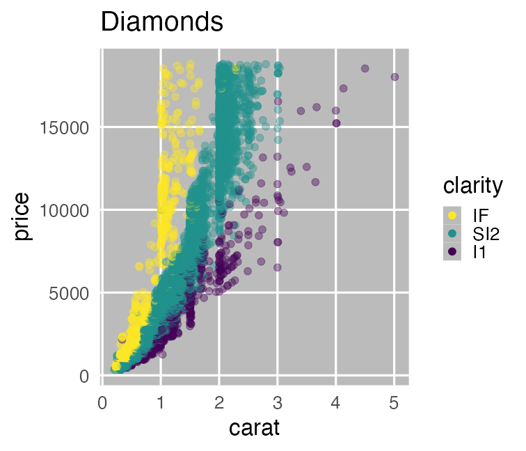
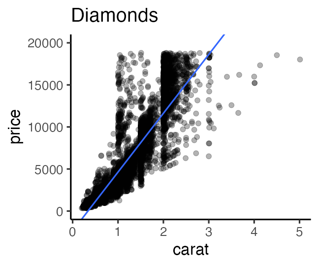

進化学実習 2023 牧野研 東北大学
- 導入: データ解析の全体像。Rの基本。
- データの可視化、レポート作成。
- データ構造の処理1: 抽出、集約など。
- データ構造の処理2: 結合、変形など。
- データ内容の処理: 数値、文字列など。
- データ入力、データ解釈
- 統計モデリング1: 確率分布、尤度
- 統計モデリング2: 一般化線形モデル
- 発表会
https://heavywatal.github.io/slides/tohoku2023r/
本実習のお品書き「データ取り扱いの基礎」
- 生物学研究におけるデータ解析の重要性を認識する。
- 理解する、とは
- プログラミング言語Rを習得し、長い目で見て楽をする。
- データの可視化
- データの前処理
- レポート作成
- データ解析入門
- 統計モデリング・仮説検定
- データ解釈の心構え・落とし穴
牧野研以外の実習・研究でも使える知識・技術。
(研究じゃない場面でも役に立つはず。)
「生物の理（ことわり）を知りたい」理学部生物学科
- 生物の複雑な機能や形態がどのように進化してきたのか解明したい
- 多様な生態系がどう誕生し維持されてきたのか理解したい
- 四肢と鰭の発生プログラムの違いや共通点を理解したい
- 行動選択や学習に関わる分子神経機構を解明したい
- 細胞内小器官の時空間的制御を理解したい
- プラナリアなどの再生能力をもたらす遺伝的基盤を解明したい
- 昆虫が植物に「虫こぶ」を作らせる機構を解明したい
- etc.
研究の基本プロセス
- 課題を見つける、仮説を立てる
- 実験🧫・観察🔬・文献📚などからデータを集める
- データを整理・解析して仮説を検証する
- 結果を報告する、1に戻る
- 実験や観察は研究の半分くらい。
- 残り半分はデータの整理・解析・報告。
→ しかし軽視されがち。ここをちゃんと、でも楽にやりたい。
データ解析って必要？ 生の数字見ればよくない？
生のままでは複雑過ぎ、情報多すぎ、何もわからない。
print(ggplot2::diamonds)
carat cut color clarity depth table price x y z
1 0.23 Ideal E SI2 61.5 55 326 3.95 3.98 2.43
2 0.21 Premium E SI1 59.8 61 326 3.89 3.84 2.31
3 0.23 Good E VS1 56.9 65 327 4.05 4.07 2.31
4 0.29 Premium I VS2 62.4 58 334 4.20 4.23 2.63
--
53937 0.72 Good D SI1 63.1 55 2757 5.69 5.75 3.61
53938 0.70 Very Good D SI1 62.8 60 2757 5.66 5.68 3.56
53939 0.86 Premium H SI2 61.0 58 2757 6.15 6.12 3.74
53940 0.75 Ideal D SI2 62.2 55 2757 5.83 5.87 3.64
ダイヤモンド53,940個について10項目の値を持つデータセット
要約統計量を見てみよう
各列の平均とか標準偏差とか:
stat carat depth table price
1 mean 0.80 61.75 57.46 3932.80
2 sd 0.47 1.43 2.23 3989.44
3 max 5.01 79.00 95.00 18823.00
4 min 0.20 43.00 43.00 326.00
大きさ carat と価格 price の相関係数はかなり高い:
carat depth table price
carat 1.00
depth 0.03 1.00
table 0.18 -0.30 1.00
price 0.92 -0.01 0.13 1.00
生のままよりは把握しやすいかも。
しかし要注意……
代表値ばかり見て可視化を怠ると構造を見逃す


データ可視化は理解の第一歩
情報をうまく絞って整理 → 直感的にわかる

carat が大きいほど price も高いらしい。
その度合いは clarity によって異なるらしい。
統計とは
データをうまくまとめ、それに基づいて推論するための手法。
- 記述統計: データそのものを要約する
- 要約統計量 (e.g., 平均、標準偏差、etc.)
- 作図、作表
- 推測統計: データの背後にある母集団・生成過程を考える
- 数理モデル
- 確率分布
- パラメータ(母数)
「グラフを眺めてなんとなく分かる」以上の分析にはモデルが必要
モデルとは
対象システムを単純化・理想化して扱いやすくしたもの
- Mathematical Model 数理モデル

- 数学的な方程式として記述されるもの。
- e.g., Lotka-Volterra eq., Hill eq.
- Computational Model 数値計算モデル

- 数値計算の手続きとして記述されるもの。
- e.g., Schelling’s Segregation Model, tumopp
- Concrete Model 具象モデル

- 具体的な事物で作られるもの。
- e.g., San Francisco Bay-Delta Model
データ科学における数理モデル
データ生成をうまく真似できそうな仮定の数式表現。

データ科学における数理モデル
データ生成をうまく真似できそうな仮定の数式表現。
e.g., 大きいほど高く売れる: $\text{price} = A \times \text{carat} + B + \epsilon$

ダイヤモンドの価格はこういう数式でおよそ表せる、という理解
→ モデルをさらに改良していき、理解の精度を上げられるかも
ウェットな実験もモデルの一種と見なせる
対象システムを単純化・理想化して扱いやすくしたもの
→ 自然ではありえない状況にしてでも、見たい関係を見る
→ 「Xを変えればYが変わる」という還元的な理解の1ステップ
- ノイズをなるべく除去
- 栄養や温度など、環境を揃える
- 近親交配を繰り返して純系を作り、遺伝的背景を揃える
- 興味のある要因のみ変えて、表現型の違いを評価
- 遺伝子1つ2つだけ改変
- 投与する薬剤の種類・量を変えてみる
- 栄養塩の濃度と光の強さを変えてみる
ドライの理論研究者を指して「モデル屋」と呼びがちだが、
広い意味では生物学者みんな「モデル屋」。
科学の営み = 巨人の肩に立つ

Standing_on_the_shoulders_of_giants
先人たちの積み重ねに基づいて、新しい発見をする
- 記録を残すことは何より重要
- 実験や野外観察では些細なことも漏らさず記録。
- 生データは何重にもバックアップ。
- データ整理・解析・作図も不可欠、だけど…
- 再現不能の職人技で切り抜けちゃう人も多い。
- コピペ、メニュー選択、配色と配置を微調整…
- 疑義が生じたら…？ 別の人がその研究を発展させたいとき…？
- 💩「ありまぁす！」
- ✅「誰でも確実に再現できるプロトコルがこちらです」
Reproducible Research (再現可能な研究) が巨人を大きくする。
再現不可能な職人的研究の例
動物園の混合展示で、各種動物はどのように分布・行動しているか、
それらを決める要因は何か。膨大な観察データに基づく超大作卒論。

生データ: ここはまだそんなに悪くない
週に1回、各個体の位置と行動を種ごとのファイルに記録。
タブは個体、A列B列はXY座標でそれ以降の列は行動、各行はある時刻。


マウスとコピペを駆使して条件ごとに複製・集計
ちゃんと合ってるのかな… ファイルもタブもたくさん…


マウスとコピペを駆使して条件ごとに複製・集計
ちゃんと合ってるのかな… ファイルもタブもたくさん…


目と手で数え、濃淡を計算し、画像ソフトで塗る
泣きながら何十枚も…。無料期間が終わって今は使えない…。


目作業・手作業 ＝ シーシュポスの岩

- 膨大な単純作業がそもそもツラい
- 人間だもの、ミスは防ぎきれない
- ミスを減らすためのチェックもツラい
- ミスを発見 → 初めからやり直し
- 新データ追加 → 初めからやり直し
- 熟練してもツラいまま
- そのときの自分しかできない、記録に残らない
→ 検証のしようがない - 卒論なら努力賞でいいかもしれないけど、科学の手続きとしては問題。
プログラミングで大量のファイルを捌く
先の例に負けず生データはどっさり。でも頑張るのは機械。


こんな感じの図もRでラクラク描けるよ


Rにやらせて楽しよう
- 規則性のある退屈な仕事は人間よりも機械のほうが得意。
- 一度書いたプログラムは、データが変わっても使いまわせる。
- 自分以外の人でも再現・検証できる
- きれいな図を簡単に描ける
- 部分的に改変しながらいろんな解析を試せる。
→ 仮説検証 だけでなく、 仮説生成(探索的データ解析) もやりやすい - やれば上達する。どんどん楽になる！

Rとは
統計解析と作図の機能が充実したプログラミング言語・環境

- クロスプラットフォーム
- Linux, Mac, Windows で動く
- オープンソース
- 永久に無償で、すべての機能を使える。
- 集合知によって常に進化している。
- コミュニティ
- 相談できる人や参考になるウェブサイトがたくさん見つかる。
この実習の目標
✅ 生物学研究にはデータとモデルが必須だと認識
✅ 再現可能な解析を楽にやりたい気持ちになる
⬜ 必要な方法を調べ、実践する力をつける
- Rでできそうなことを把握する
- 困ったときの対処法・相談先を知る
⬜ データ解析の基本に触れる
個々の方法は覚えなくても大丈夫！
忘れては調べ、を何度も繰り返しながら染み込ませていこう。
1時限目後半: Rの基礎
✅ Rはデータ解析に便利なプログラミング言語・環境
⬜ R環境のセットアップ
⬜ Rとの対話
⬜ 「プロジェクト」と「スクリプト」を作る
⬜ 基本的な型と演算
⬜ Rパッケージ
⬜ 疑問・エラーの解決方法
Keyboard shortcuts
| Action | ||
|---|---|---|
| Switch apps | commandtab | alttab |
| Quit apps | commandq | altF4 |
| Spotlight | commandspace | |
| Cut, Copy, Paste | commandx, -c, -v | ctrlx, -c, -v |
| Select all | commanda | ctrla |
| Undo | commandz | ctrlz |
| Find | commandf | ctrlf |
| Save | commands | ctrls |
R環境のセットアップ
- R本体
- コマンドを解釈して実行するコア部分。
- よく使われる関数なども標準パッケージとして同梱。
- RStudio Desktop
- Rをより快適に使うための総合開発環境 (IDE)
- 必須じゃないけど便利なので結構みんな使ってる。

RStudioを起動して、環境チェック
次のコードをコピーして、左下のConsoleにペースト return
student_id = "C1SB0000" # 自分のIDに書き換えてください
source("https://example.com/sice/report.R")
Hello, C1SB0000.
のような返事が返ってきていればOK。
なんらかのエラーが出た人は申し出てください。
余裕があれば update.packages() を実行して更新。
RStudioを起動してConsoleで対話しよう
Workspace (Environment) = 一時オブジェクトの集まり

毎回まっさらなワークスペースで始める設定
“Restore …” のチェックを外して、 “Save …” のNeverを選択

“Project” を新規作成する
File → New Project… → New Directory → New Project →
→ Directory name: r-training-2023
→ as subdirectory of: ~/project or C:/Users/yourname/project

📁 ディレクトリ ＝ フォルダ。 ~/ = ホームディレクトリ
Rスクリプトに書いてから実行
File → New File → R script

Rスクリプトに書いてから実行
File → New File → R script

Rスクリプトに書いてから実行
Select text with shift←↓↑→
Execute them with ctrlreturn

Rスクリプトを保存する
- 手順
- File → Save commands
- ファイル名:
hello.R - 場所: さっき作ったプロジェクト内 (デフォルトでそうなるはず)
- スクリプトを書いたら消さずに保存すること！
- 書いたスクリプトは財産
- 保存しておけばまた使い回せる
🔰 いろんな四則演算を試して hello.R に保存してみよう。
e.g., 1 + 2 + 3, 3 * 7 * 2, 4 / 2, 4 / 3, etc.
プロジェクト📁にファイルが溜まっていく
スクリプト、データ、結果を分けて整理する例:
r-training-2023/ # プロジェクトの最上階
├── r-training-2023.Rproj # これダブルクリックでRStudioを起動
├── hello.R
├── transform.R # データ整理・変形のスクリプト
├── visualize.R # 作図のスクリプト
├── data/ # 元データを置くところ
│ ├── iris.tsv
│ └── diamonds.xlsx
└── output/ # 結果の出力先
├── iris-petal.png
└── iris-summary.tsv
プロジェクト最上階を作業ディレクトリとし、
ファイル読み書きの基準にする。(後で詳しく)
ほんの一例です。好きな構造に決めてください。
作業ディレクトリ: Rにとっての現在地 getwd()
- ファイル読み書き、画像の保存などはここが基準。
*.RprojダブルクリックでRStudioを開けば、いい位置で作業再開。

Rと接する上での心構え

- エラー文を恐れない
- 熟練プログラマでも頻繁にエラーを起こす。
- エラーはRからのメッセージ。意図を読み取って修正しよう。
- プログラミングの経験値 ≈ エラー解決の経験値
- 困ったらウェブ検索
- あなたの問題は全世界のRユーザーが既に通った道。
- 日本語で、英語で、エラー文そのもので検索すれば解決策に当たる。
この実習の取り組み方
とにかく手を動かして体感しよう！
- こういう枠が出てきたら、自分のRスクリプトにコピペして保存:
head(iris) - 実行してコンソールを確認。思ったとおりの出力？
ErrorやWarningがあったらよく読んで対処する。
(無視していいWarningもたまーにあるけど) - 🔰若葉マークの練習問題があれば解いてみる。
そこまでのコードのコピペ＋改変でできるはず。
疑問・困りごとがある場合は気軽に割り込んでください。
TAがいるならTAが、リモートならChat欄が随時受付中です。
変数/オブジェクトを作ってみよう
x = 2 # Create x
x # What's in x?
[1] 2
y = 5 # Create y
y # What's in y?
[1] 5
Rでは代入演算子として矢印 <- も使えるけど私は = 推奨。
# 記号より右はRに無視される。コメントを書くのに便利。
x + y
[1] 7
🔰 x と y の引き算、掛け算、割り算をやってみよう
基本的な演算
+ とか * のような演算子(operator)を変数の間に置く。
10 + 3 # addition
10 - 3 # subtraction
10 * 3 # multiplication
10 / 3 # division
10 %/% 3 # integer division
10 %% 3 # modulus 剰余
10 ** 3 # exponent 10^3
🔰 コピペして結果を確認してみよう。
関数 (function)
変数を受け取って、何か仕事して、返す命令セット
x = seq(1, 3) # 1と3を渡すとvectorが返ってくる
x
[1] 1 2 3
sum(x) # vectorを渡すと足し算が返ってくる
[1] 6
square = function(something) { # 自分の関数を定義
something ** 2
}
square(x) # 使ってみる
[1] 1 4 9
🔰 自分の関数を何か作ってみよう。
e.g., 2倍にする関数 twice
変数/オブジェクトを作ってみよう Part 2
x = 42 # Create x
x # What's in x?
[1] 42
y = "24601" # Create y
y # What's in y?
[1] "24601"
この x と y を足そうとするとエラーになる。なぜ？
x + y # Error! Why?
Error in x + y: non-numeric argument to binary operator
変数/オブジェクトの型
class(x)
[1] "numeric"
is.numeric(x)
[1] TRUE
is.character(x)
[1] FALSE
as.character(x)
[1] "42"
🔰 さっき作った y にも同じ関数を適用してみよう。
変数/オブジェクトの型
vector: 基本型。一次元の配列。logical: 論理値 (TRUEorFALSE)numeric: 数値 (整数42Lor 実数3.1416)character: 文字列 ("a string")factor: 因子 (文字列っぽいけど微妙に違う)
array: 多次元配列。vector同様、全要素が同じ型。matrix: 行列 = 二次元の配列。
list: 異なる型でも詰め込める太っ腹ベクトル。data.frame: 同じ長さのベクトルを並べた長方形のテーブル。重要。
tibbleとかtbl_dfと呼ばれる亜種もあるけどほぼ同じ。
vector: 一次元の配列
1個の値でもベクトル扱い。
同じ長さ(または長さ1)の相手との計算が得意。
x = c(1, 2, 9) # 長さ3の数値ベクトル
x + x # 同じ長さ同士の計算
[1] 2 4 18
y = 10 # 長さ1の数値ベクトル
x + y # 長さ3 + 長さ1 = 長さ3 (それぞれ足し算)
[1] 11 12 19
x < 5 # 5より小さいか
[1] TRUE TRUE FALSE
🔰 この x, y を使っていろいろな演算を試してみよう
vectorから部分的に抜き出す
[] を使う。番号は1から始まる。
letters
[1] "a" "b" "c" "d" "e" "f" "g" "h" "i" "j" "k" "l" "m" "n" "o" "p" "q" "r" "s" "t" "u" "v" "w" "x" "y" "z"
letters[3]
[1] "c"
letters[seq(4, 6)] # 4 5 6
[1] "d" "e" "f"
letters[seq(1, 26) < 4] # TRUE TRUE TRUE FALSE FALSE ...
[1] "a" "b" "c"
vectorを渡した結果は関数によって異なる
各要素に適用するもの:
x = c(1, 2, 9)
y = sqrt(x) # square root
y
[1] 1.000000 1.414214 3.000000
全要素を集約した値を返すもの:
z = sum(x)
z
[1] 12
🔰 log(), exp(), length(), max(), mean()
にvectorを渡してみよう。
matrix: 二次元の配列 (行列)
1本のvectorを折り曲げて長方形にしたもの。
中身は全て同じ型。機械学習とか画像処理とかで使う。
v = seq(1, 8) # c(1, 2, 3, 4, 5, 6, 7, 8)
x = matrix(v, nrow = 2) # 2行に畳む。列ごとに詰める
x
[,1] [,2] [,3] [,4]
[1,] 1 3 5 7
[2,] 2 4 6 8
y = matrix(v, nrow = 2, byrow = TRUE) # 行ごとに詰める
y
[,1] [,2] [,3] [,4]
[1,] 1 2 3 4
[2,] 5 6 7 8
🔰 結果を確認してみよう: x + y, dim(x), nrow(x), ncol(x).
行 (row), 列 (column) の憶え方


data.frame: 長方形のテーブル (重要!)
同じ長さの列vectorを複数束ねた長方形の表。
e.g., 長さ150の数値ベクトル4本と因子ベクトル1本:
print(iris)
Sepal.Length Sepal.Width Petal.Length Petal.Width Species
1 5.1 3.5 1.4 0.2 setosa
2 4.9 3.0 1.4 0.2 setosa
3 4.7 3.2 1.3 0.2 setosa
4 4.6 3.1 1.5 0.2 setosa
--
147 6.3 2.5 5.0 1.9 virginica
148 6.5 3.0 5.2 2.0 virginica
149 6.2 3.4 5.4 2.3 virginica
150 5.9 3.0 5.1 1.8 virginica
iris はアヤメ属3種150個体に関する測定データ。
Rに最初から入ってて、例としてよく使われる。
data.frameを眺める
概要を掴む:
head(iris, 6) # 先頭だけ見てみる。末尾は tail()
nrow(iris) # 行数: Number of ROWs
ncol(iris) # 列数: Number of COLumns
names(iris) # 列名
summary(iris) # 要約
View(iris) # RStudioで閲覧
str(iris) # 構造が分かる形で表示
tibble [150 × 5] (S3: tbl_df/tbl/data.frame)
$ Sepal.Length: num [1:150] 5.1 4.9 4.7 4.6 5 5.4 4.6 5 4.4 4.9 ...
$ Sepal.Width : num [1:150] 3.5 3 3.2 3.1 3.6 3.9 3.4 3.4 2.9 3.1 ...
$ Petal.Length: num [1:150] 1.4 1.4 1.3 1.5 1.4 1.7 1.4 1.5 1.4 1.5 ...
$ Petal.Width : num [1:150] 0.2 0.2 0.2 0.2 0.2 0.4 0.3 0.2 0.2 0.1 ...
$ Species : Factor w/ 3 levels "setosa","versicolor",..: 1 1 1 1 1 1 1 1 1 1 ...
🔰 ほかのデータもいろいろ見てみよう。
e.g., mtcars, quakes, data()
data.frameを眺める
部分的なdata.frameを取得する:
iris[2, ] # 2行目
iris[2:5, ] # 2行目から5行目まで
iris[, 3:4] # 3-4列目
iris[2:5, 3:4] # 2-5行目, 3-4列目
1列をvectorとして取得する:
iris[[3]] # 3列目
iris$Petal.Length # Petal.Length列
iris[["Petal.Length"]] # Petal.Length列
iris[["Petal.Length"]][2] # Petal.Length列の2番目
結果がdata.frameになるかvectorになるか曖昧で危険、非推奨:
iris[, 3] # 3列目
iris[, "Petal.Length"] # Petal.Length列
iris[2, "Petal.Length"] # 2行目Petal.Length列
data.frameの新規作成
同じ長さの 列(column) vector を結合して作る:
x = c(1, 2, 3)
y = c("A", "B", "C")
mydata = data.frame(x, y)
print(mydata)
x y
1 1 A
2 2 B
3 3 C
🔰 次のようなdata.frameを作って theDF と名付けよう:
i s
24 x
25 y
26 z
ヒント: c() 無しでクリアすることも可能。
data.frameの読み書き
Rには read.csv() とか write.csv() とかが標準装備されてるけど、、、
write.csv(iris, "iris.csv")
"","Sepal.Length","Sepal.Width","Petal.Length","Petal.Width","Species"
"1",5.1,3.5,1.4,0.2,"setosa"
"2",4.9,3,1.4,0.2,"setosa"
"3",4.7,3.2,1.3,0.2,"setosa"

なんか左端の列とか “引用符” が勝手に作られたりいろいろ不便。
readr というパッケージを使えばそういう悩みから解放される。
readr::write_csv(iris, "iris.csv")
Sepal.Length,Sepal.Width,Petal.Length,Petal.Width,Species
5.1,3.5,1.4,0.2,setosa
4.9,3,1.4,0.2,setosa
4.7,3.2,1.3,0.2,setosa
R package
便利な関数やデータセットなどをひとまとめにしたもの。
- Standard Packages
- Rの標準機能。何もしなくても使用可能
- Contributed Packages
- 有志により開発され、 CRAN にまとめて公開されている。
- 要インストール。使う前に読み込むおまじないが必要。
install.packages("readr") # 一度やればOK
library(readr) # 読み込みはRを起動するたびに必要
update.packages() # たまには更新しよう
- 素のRも覚えきってないのにいきなりパッケージ？
- 大丈夫。誰も覚えきってない。
- パッケージを使わないR作業 = 火もナイフも使わない料理
tidyverse: データ科学のためのパッケージ群

install.packages("tidyverse")
library(conflicted) # 安全のおまじない
library(tidyverse) # 一挙に読み込み
── Attaching core tidyverse packages ──── tidyverse 2.0.0 ──
✔ dplyr 1.1.1 ✔ readr 2.1.4
✔ forcats 1.0.0 ✔ stringr 1.5.0
✔ ggplot2 3.4.2 ✔ tibble 3.2.1
✔ lubridate 1.9.2 ✔ tidyr 1.3.0
✔ purrr 1.0.1
一貫したデザインでデータ解析の様々な工程をカバー
疑問やエラーの解決方法
- エラーのほとんどは凡ミス由来。よく確認しよう。
- エラー文をちゃんと読む:
No such file or directory - 変数の中身を確かめる:
str(iris),attributes(iris) - よくあるエラー集 (石川由希さん@名古屋大) をチェックする
- エラー文をちゃんと読む:
- エラー文やパッケージ名をコピペしてウェブ検索
→ StackOverflow や個人サイトに解決策 - Slack
r-wakalang で質問を投稿する。
(質問に飢えた優しいワニが多数生息 👀 👀 👀 👀) - 状況再現できる小さな例
(reprex)
を添えると回答を得やすい。
(これを準備してるうちに問題が切り分けられて自己解決したり) - パッケージの公式ドキュメントをちゃんと読む
- R(Studio)内のヘルプを読む:
?sum,help.start()
1時限目後半: Rの基礎
✅ Rはデータ解析に便利なプログラミング言語・環境
✅ プロジェクトを使ってファイルを管理
✅ スクリプトを書いてからコンソールで実行
✅ 変数には型がある: 数値、文字列、データフレームなど
✅ 便利なパッケージを使っていく
✅ 疑問・エラーの解決方法
個々の方法は覚えなくても大丈夫！
忘れては調べ、を何度も繰り返しながら染み込ませていこう。
データ解析のおおまかな流れ
- コンピュータ環境の整備
- データの取得、読み込み
- 探索的データ解析
- 前処理、加工 (地味。意外と重い) 👈 明日以降の主題
- 可視化、仮説生成 (派手！楽しい！) 👈 本日後半の主題
- 統計解析、仮説検証 (みんな勉強したがる)
- 報告、発表
実習全体の予定
| 時間 | 4/10 Mon | 4/11 Tue | 4/12 Wed | 4/13 Thu | 4/17 Mon |
|---|---|---|---|---|---|
| 13:00 | 導入 | 構造処理1 | 内容処理 | 統計モデル1 | 発表会 |
| 14:40 | 可視化 | 構造処理2 | 入力・解釈 | 統計モデル2 | 発表会 |
| 16:20 | 練習問題 | 練習問題 | 練習問題 | 練習問題 | 予備 |
- 毎日最後に練習問題を出します。解けた班から解散。
- レポート課題については今日の後半にお知らせ。
🔰練習問題をちゃんとこなせば半自動的にレポートもできあがる仕掛け。
Reference
- R for Data Science — Hadley Wickham and Garrett Grolemund
- https://r4ds.had.co.nz/
- Book
- 日本語版書籍(Rではじめるデータサイエンス)
- データ分析のための数理モデル入門 江崎貴裕 2020
- 統計学を哲学する 大塚淳 2020
- 科学とモデル—シミュレーションの哲学 入門 Michael Weisberg 2017
(原著: Simulation and Similarity 2013)
- Other versions
- 「Rによるデータ前処理実習」 岩嵜航 2022 東京医科歯科大
- 「Rを用いたデータ解析の基礎と応用」 石川由希 2022 名古屋大学